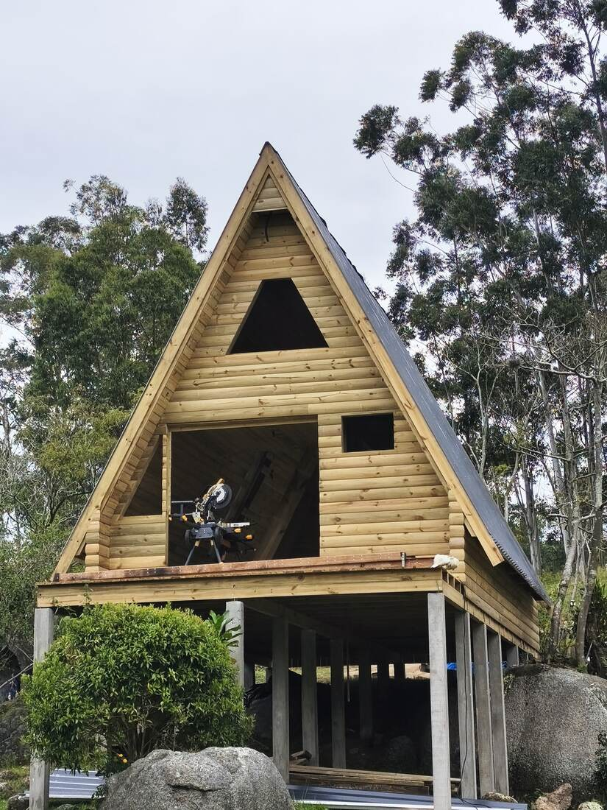
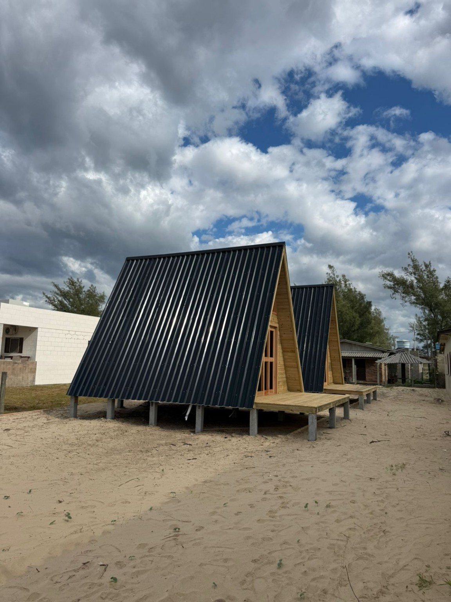
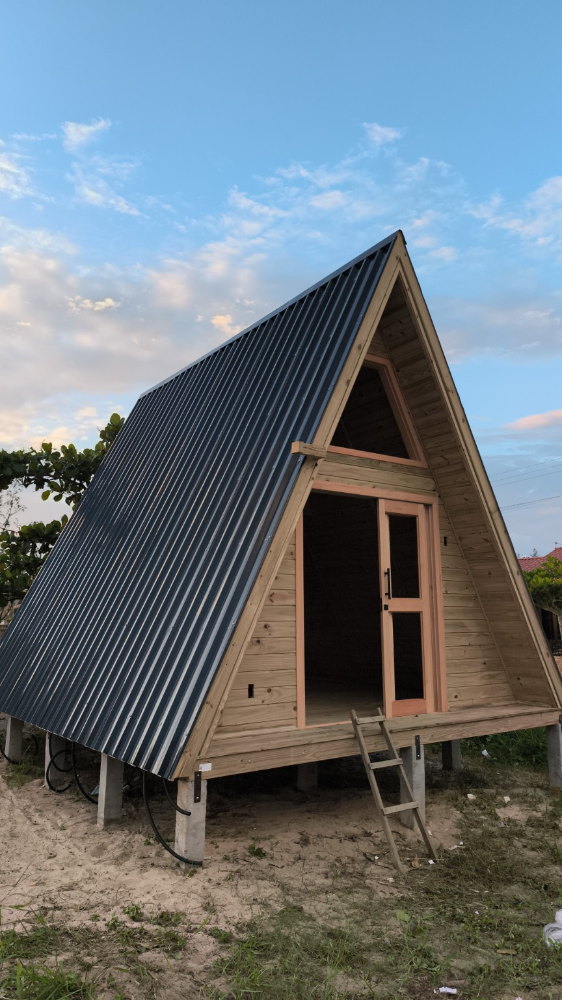

Projeto e implantação
Avaliamos acesso ao terreno, fundação, drenagem e posição do chalé antes de definir a estrutura e as etapas da obra.
Construímos chalés de madeira para moradia ou temporada em Tubarão, Laguna, Garopaba, Imbituba, Jaguaruna e região. O projeto começa pelo terreno, pela área desejada, pelos ambientes e pelo tipo de cobertura.
Falar sobre meu projeto
Avaliamos acesso ao terreno, fundação, drenagem e posição do chalé antes de definir a estrutura e as etapas da obra.
Distribuição interna, aberturas, varanda e telhado são planejados conforme o uso e o projeto aprovado para a construção.
Detalhamos o que está incluído em estrutura, fechamento, cobertura, acabamentos e instalações para que você possa comparar as opções.
Fotos de chalés de madeira com telhado inclinado registrados em obras da JP Carpintaria em Tubarão, SC.

Estruturas triangulares com fachadas em madeira e cobertura inclinada.

Detalhe da fachada de madeira, da abertura triangular e do telhado escuro de um chalé A-frame.
Envie a cidade, área aproximada em m², número de cômodos, fotos do terreno e referências do estilo que deseja. Com essas informações, conseguimos entender melhor o serviço e combinar uma visita quando necessário.
Enviar informações pelo WhatsApp